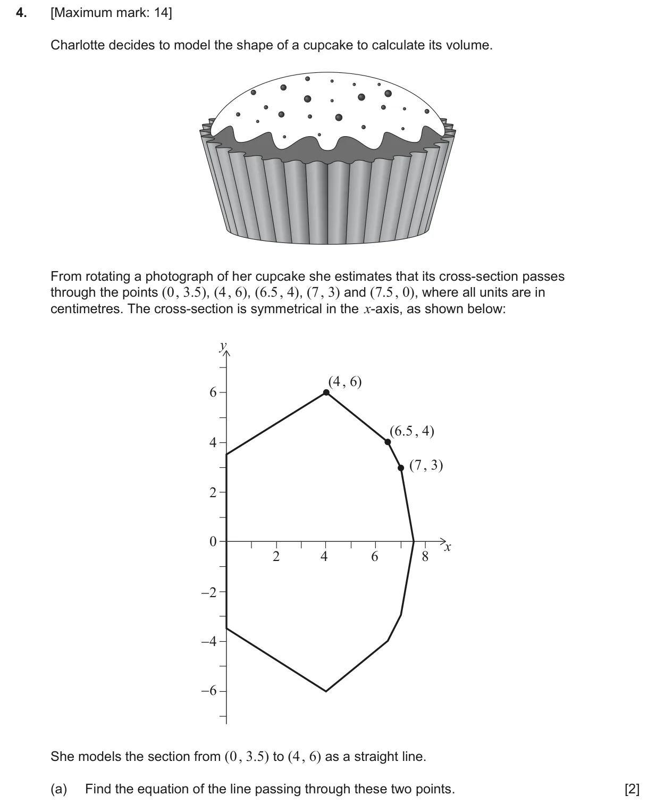
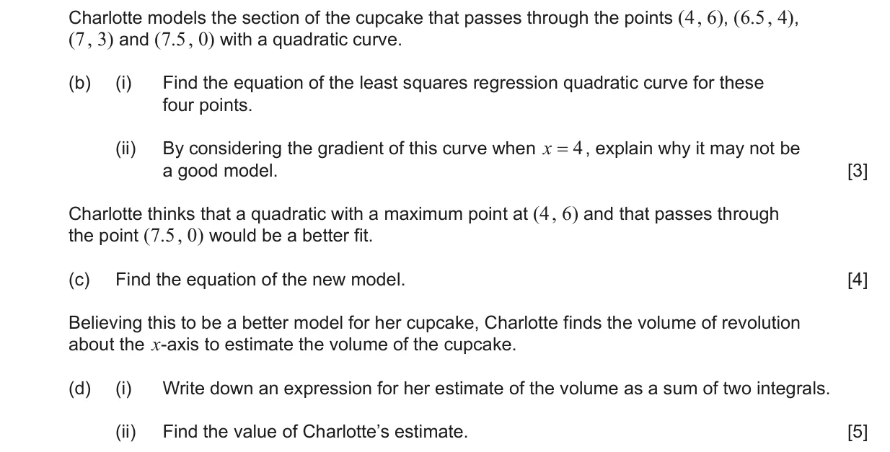
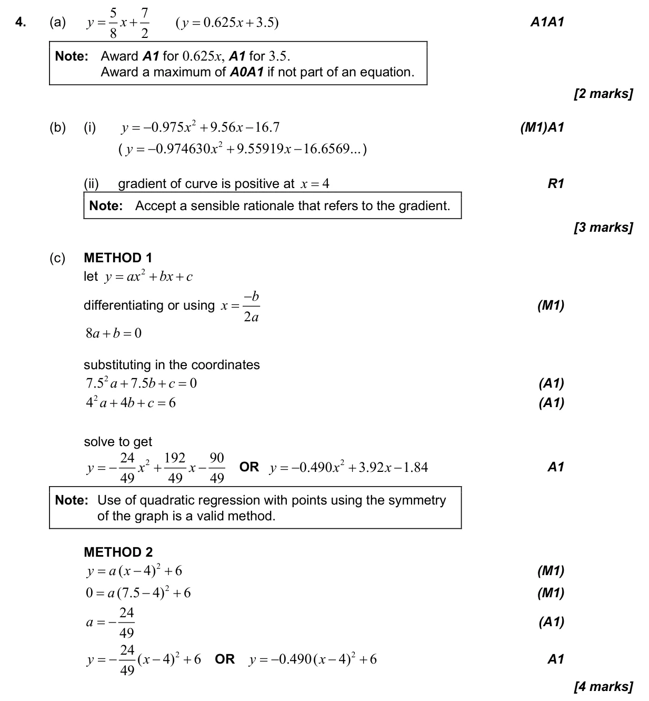
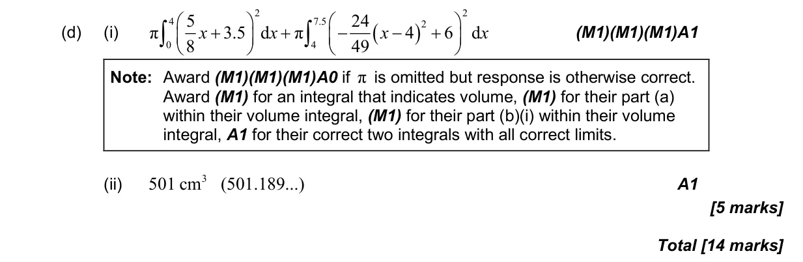

14 marks P2 TZ1 Calculator 5.12 Areas against either axis and volumes of revolution2.6 The modelling process: choose, fit, test and use a model2.1 Equations of straight lines, parallel and perpendicular2.5 Modelling with linear, quadratic, exponential, power, cubic and sinusoidal functions4.13 Non-linear regression and the coefficient of determination Question Hide breakdown abcd Markscheme 